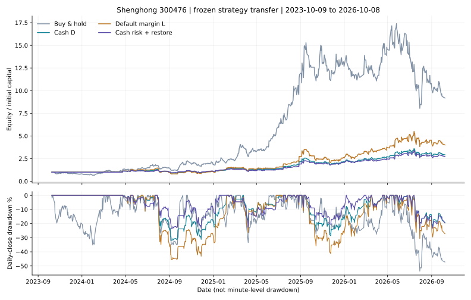

原策略迁移到胜宏科技，结果如何？
300476 · 固定参数迁移测试 · 2026-10-10计算 · 不是新推荐策略
结论：不能原样视为成熟可用方案
2023-10-09至2026-10-08，同样100万元本金，当前默认融资方案净收益300.94%，全仓持有818.57%；最大回撤分别为48.39%与55.12%。收益明显落后，回撤改善也不足以支持“高胜率、低回撤”的判断。
现金版本最大回撤34.50%，完整持仓周期胜率62.24%；融资后回撤升至48.39%，周期胜率降至60.42%。对你更重视回撤和胜率的偏好而言，融资并没有带来更好的组合。
这次冻结沪电参数后计算，没有根据胜宏的结果调参。胜宏是用户选定的同行，不是随机股票样本；这是一项跨股票迁移检验，不代表全市场有效，也不是冻结后的未来实盘验证。
测试的具体规则
当前默认D策略：使用前一交易日两日RSI，低于35目标100%，高于60目标0%，中间50%；最近已披露归母净利润同比不大于0时空仓。目标比前一天降低时09:45执行，否则10:00。融资版把所有100%目标放大到150%；买入后欠款不超过净资产50%，持有期间允许被动超仓，真正的减仓信号及担保风控保留。
100万元本金，股票佣金万1、最低5元，另计印花税和过户费；单边5基点滑点，融资年息6%。T+1、100股整数手、前一根5分钟量的1%成交上限；每笔最多30万股，假定限价委托。创业板2020-08-24起按20%涨跌幅，此前10%。这些是交易制度适配，不是策略调参。
全仓基准使用已修复的持续建仓版本；初始资金受相同成本及容量限制，未买完继续尝试，分红保留现金。恢复候选则把上一轮“早盘风险减仓＋次日09:45确认后恢复”整套规则迁移，仅作附加对照，不能把它的差异全部归因于提前买回。
三年完整账户
| 方案 | 净收益 | 期末资产（万元） | 最大回撤¹ | 完整周期胜率² | 盈利日³ | 平均仓位 |
|---|---|---|---|---|---|---|
| 全仓持有 | 818.57% | 918.57 | 55.12% | 未结束持有，不计算 | 340/727=46.77% | 99.55% |
| 原策略·现金 | 191.85% | 291.85 | 34.50% | 61/98=62.24% | 226/727=31.09% | 38.15% |
| 当前默认·融资 | 300.94% | 400.94 | 48.39% | 58/96=60.42% | 225/727=30.95% | 53.04% |
| 减仓＋恢复·现金候选 | 172.45% | 272.45 | 26.47% | 62/99=62.63% | 222/727=30.54% | 34.44% |
| 减仓＋恢复·融资候选 | 282.21% | 382.21 | 41.44% | 59/97=60.82% | 222/727=30.54% | 48.88% |
¹ 5分钟收盘采样回撤，不是逐笔盘中最大回撤。² 从空仓到再次空仓的完整持仓周期，计费用与利息；不是每个买点、不是做T往返胜率。³ 盈利日÷727个交易日，空仓和平盘不计盈利。各方案完整T往返胜率未定义，不能宣称60%或80%的日内做T准确率。

图中回撤按日终计算，表中采用更细的5分钟采样，两个数字不应混淆。曲线均从相同本金开始。
为什么跑输：过早离场，也可能在下跌中加杠杆
2025年3月：全仓持有+58.41%，融资策略−3.03%；21个交易日中13天目标空仓，平均实际仓位38.21%。2025年6月：全仓+55.04%，融资+7.49%；20天中16天目标空仓，平均仓位14.81%。短期RSI偏高后继续上涨，使反转策略失去参与机会。
2024年2月：全仓持有+46.27%，策略整月空仓，原因包含负增长财报门槛。2024年8月：全仓−12.19%，融资策略−31.33%；抄跌反转与杠杆共同放大亏损。上述月份按结果挑选用于解释失败，不能反过来当作预先可知的交易条件。
在727天中，业绩门槛关闭131天；另有251天业绩为正但昨日RSI大于60而目标空仓，其中65天股票当日涨幅至少3%。这是事后条件分组，不等于65次可以完整抓住的涨幅；策略在开盘仍可能持有前日仓位，实际损益以账本为准。
固定年度与更早历史
每段独立以100万元开始。第一年2023-10-09至2024-10-08，第二年2024-10-09至2025-10-08，第三年2025-10-09至2026-10-08；更早段2020-01-02至2023-09-28。
| 区间 | 方案 | 净收益 | 最大回撤 | 完整周期胜率 |
|---|---|---|---|---|
| year1 | 全仓持有 | 110.67% | 39.60% | — |
| year1 | 原策略·现金 | -0.03% | 34.50% | 55.56% |
| year1 | 当前默认·融资 | -6.41% | 48.39% | 43.75% |
| year1 | 减仓＋恢复·现金候选 | 4.87% | 26.47% | 52.94% |
| year1 | 减仓＋恢复·融资候选 | -1.90% | 41.44% | 43.75% |
| year2 | 全仓持有 | 534.92% | 35.92% | — |
| year2 | 原策略·现金 | 120.02% | 23.04% | 70.00% |
| year2 | 当前默认·融资 | 201.59% | 30.42% | 67.50% |
| year2 | 减仓＋恢复·现金候选 | 94.04% | 25.98% | 68.29% |
| year2 | 减仓＋恢复·融资候选 | 170.77% | 32.28% | 68.29% |
| year3 | 全仓持有 | -28.41% | 54.03% | — |
| year3 | 原策略·现金 | 31.96% | 25.98% | 57.50% |
| year3 | 当前默认·融资 | 38.50% | 37.21% | 55.00% |
| year3 | 减仓＋恢复·现金候选 | 31.78% | 26.04% | 60.00% |
| year3 | 减仓＋恢复·融资候选 | 38.51% | 37.25% | 55.00% |
| older | 全仓持有 | 37.95% | 60.61% | — |
| older | 原策略·现金 | -4.50% | 47.10% | 66.67% |
| older | 当前默认·融资 | -6.67% | 60.81% | 63.16% |
| older | 减仓＋恢复·现金候选 | -3.31% | 44.37% | 58.00% |
| older | 减仓＋恢复·融资候选 | -0.69% | 56.96% | 65.71% |
默认融资第一年亏6.41%，全仓却涨110.67%；第二年201.59%仍显著低于全仓534.92%；第三年在全仓下跌28.41%时盈利38.50%。收益改善主要体现在后段避跌，无法弥补前两段的机会损失。更早历史融资收益−6.67%、回撤60.81%，没有稳定性证据。
滑点加倍与尾部风险
| 方案 | 净收益 | 期末资产（万元） | 最大回撤¹ | 完整周期胜率² | 盈利日³ | 平均仓位 |
|---|---|---|---|---|---|---|
| 全仓持有 | 818.52% | 918.52 | 55.12% | 未结束持有，不计算 | 340/727=46.77% | 99.57% |
| 原策略·现金 | 165.21% | 265.21 | 34.82% | 61/98=62.24% | 223/727=30.67% | 38.09% |
| 当前默认·融资 | 246.28% | 346.28 | 48.77% | 57/97=58.76% | 225/727=30.95% | 53.06% |
| 减仓＋恢复·现金候选 | 145.48% | 245.48 | 26.94% | 62/98=63.27% | 219/727=30.12% | 34.42% |
| 减仓＋恢复·融资候选 | 225.20% | 325.20 | 41.88% | 58/98=59.18% | 221/727=30.40% | 48.90% |
| 5基点方案 | 最差单日 | 最差5%日均 | 已结束周期盈亏金额比 | 未结束周期浮动损益（元） |
|---|---|---|---|---|
| 全仓持有 | -14.83% | -8.62% | — | 8,185,679.05 |
| 原策略·现金 | -11.48% | -5.63% | 1.71 | -220,283.06 |
| 当前默认·融资 | -18.27% | -8.37% | 1.66 | -468,082.26 |
| 减仓＋恢复·现金候选 | -10.54% | -5.01% | 1.80 | -169,523.82 |
| 减仓＋恢复·融资候选 | -15.71% | -7.58% | 1.74 | -404,685.65 |
默认融资最差单日−18.27%，持仓比例峰值178.62%是价格下跌后的被动漂移；并不代表新买入突破50%净资产欠款限制。期末未结束持仓周期亏损已按市值计入净值及回撤，没有靠不平仓隐藏亏损。股息税仍沿用原模型简化（策略20%、长期持有基准0%），未精确重建每批股份的税龄。
7月前后与领先比例
下面是三年账户连续承接的分段收益，不在7月1日重置持仓。累计领先比例按每个交易日的期末资产与全仓比较；63日滚动领先按各自滚动区间的净值涨幅比较。
| 方案 | 截至2026-06-30收益 | 7月起收益 | 累计领先比例 | 最长连续落后 | 63日滚动领先 |
|---|---|---|---|---|---|
| 全仓持有 | 1435.45% | -40.18% | 基准 | — | — |
| 原策略·现金 | 239.95% | -14.15% | 13.07% | 630 | 32.48% |
| 当前默认·融资 | 402.78% | -20.26% | 13.48% | 569 | 38.65% |
| 减仓＋恢复·现金候选 | 213.15% | -13.00% | 13.07% | 630 | 31.28% |
| 减仓＋恢复·融资候选 | 375.73% | -19.66% | 13.07% | 630 | 36.09% |
默认融资只有13.48%的交易日累计领先全仓，最长连续落后569个交易日。现金与融资都不能依靠期末盈利就证明迁移成功。
附加候选是否值得继续
早盘风险减仓＋次日恢复的现金候选收益172.45%、回撤26.47%、周期胜率62/99=62.63%；相较原现金版本回撤改善，但胜率仅小幅变化。该候选只在第一年度降低回撤，第二、三年度回撤反而略增；它不是已验证的新默认。融资候选回撤仍有41.44%。没有在胜宏数据上重新选择参数。
若继续优化，优先研究强趋势期间保留基础仓位、RSI高位钝化时是否需要清仓，以及负增长财报门槛是否过于滞后。必须预先固定规则再检验，不能单凭这几个已知大涨月倒推完美买点。本次到此完成迁移测试，沪电默认保持不变。
数据核验、未决事项与下载
下载2020年以来1637个完整48根5分钟交易日，三年段727天；腾讯800日日线与BaoStock的OHLC全部相同，成交量差最多50股为手数取整。但三年有586天分钟最高最低价与日线至少差2分，16天收盘差至少2分，109天成交量差超过1%。近期另一分钟接口同样存在极值缺失，不能视为独立逐笔核验。因此这里是可复算的同口径研究模拟，不能声称精确成交或预测胜率。
完成80组固定对照、2245笔账本及1403次融资买入额度核对；沪电原1637天信号完全复现，交换规则适配后原沪电回测序列一致。胜宏每个财务数据使用日严格晚于pubDate；最新H1同比33.30%与官方摘要一致，但所有历史财报修订版本、历史融资标的资格、券源额度及实际成交延迟没有逐日核实。2021年分红源有同日一条缺值、一条0.19元，采用完整记录，不把缺值当零。
回测截至2026-10-08以与沪电保持相同区间；2026-10-09日线可取得，但未纳入分钟回测。现金方案可以直接比较，融资结果以券商允许该股及额度为前提。没有真实交易，也未更换任何默认方案。
来源：深交所创业板交易规则 · 胜宏2026半年报摘要 · BaoStock；原始响应、日期、公式与逐笔结果见证据包。